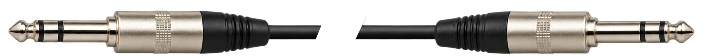
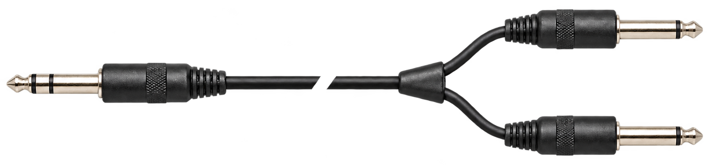
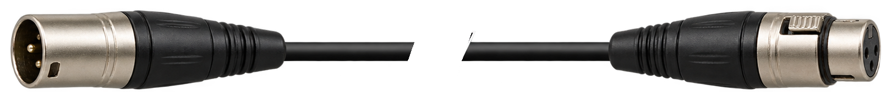
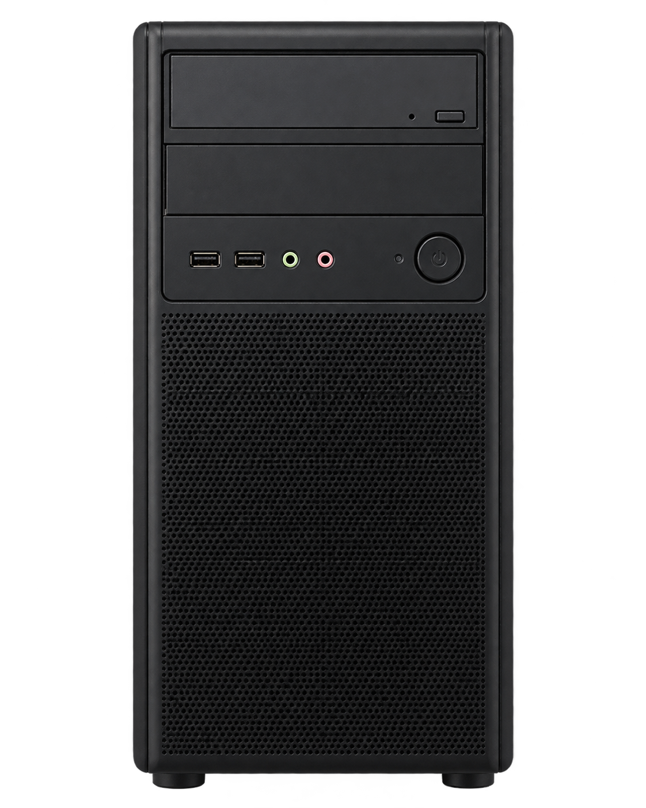
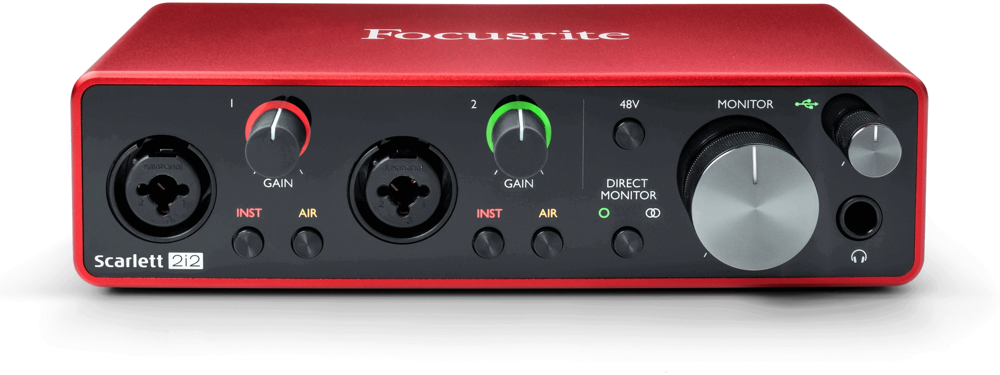
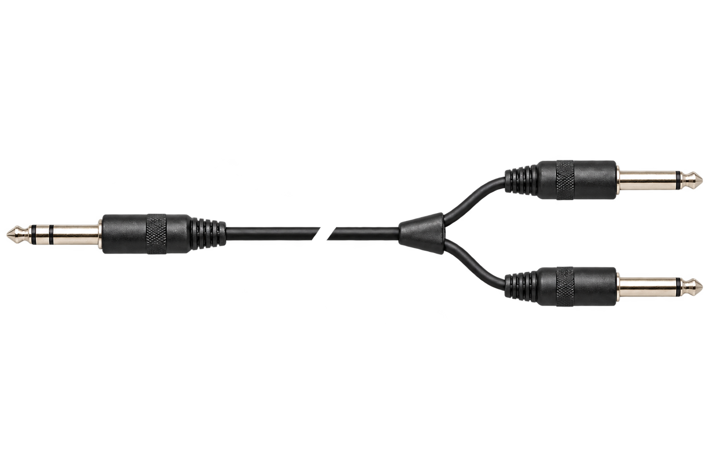
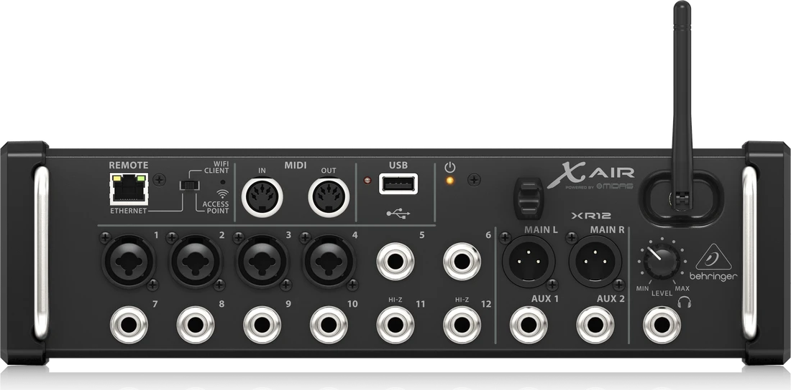

Durante la visita técnica del día 7 de octubre de 2026, surgieron dudas puntuales y se observaron algunos problemas que, con una inversión e implementación adecuada, pueden resolverse haciendo más robusto el sistema de sonido en general (que ya es bueno de por sí).
El tendido de líneas subterráneas para conectar micrófono central → consola ↔ cajas (parlantes) resulta práctico y evita manipulación innecesaria de cables y posibles tropiezos y rotura de componentes.
El flujo de señal (desde y hacia dónde va el sonido) en general está resuelto pero puede mejorarse, ya que la PC de escritorio utilizada para proyecciones y streaming genera un ruido importante que es evitable. Otros ruidos de base (perceptibles con solo encender las cajas) pueden deberse a interferencias en la propia red eléctrica, en cuyo caso deberán contactar a un especialista para que realice la evaluación correspondiente. A mí criterio, durante la visita, no se presentaron problemas relevantes en ese aspecto.
Mi principal sugerencia es eliminar definitivamente el uso de la placa de sonido incorporada en la computadora. Es muy común que los componentes electrónicos generen ruidos molestos con el simple movimiento del mouse o lecturas de disco (entre otras cosas). En su lugar, lo adecuado sería instalar una interfaz de audio USB: algo similar a “tener la placa de sonido por fuera de la computadora”, teniendo otras ventajas técnicas para mantener las conexiones y adaptaciones correctas en todo el flujo. El ruido debería reducirse considerablemente si, además, la consola, los receptores inalámbricos, la interfaz y las computadoras se ubican manteniendo cierta distancia (no poniendo todas las cosas encimadas cuando pueda evitarse).
Interfaces de audio recomendadas
Los precios, ofertas y modelos disponibles dependerán de cada vendedor. No tengo relación con ninguno de ellos, son solo sugerencias.
Las 3 opciones tienen precios muy similares, porque son buenos productos de base y “estándar” para estas situaciones. Existen otras marcas más económicas, pero la calidad no está a la altura de estas. Si quieren buscar por otros medios o proveedores, la condición es que la interfaz tenga 2 entradas y 2 salidas.
Cables necesarios
Con la compra de una interfaz, más los dispositivos que ya han adquirido para el Auditorio, conviene ordenar las cosas y aprovechar las conexiones lo mejor posible. Todos los cables tienen prestaciones y usos diferentes, aunque se vean parecidos.

Conexión desde la interfaz USB a la consola: 2x cable TRS de 6.3mm balanceado.Ejemplo en Mercado Libre

Conexión desde la consola a la interfaz USB: 1x cable estéreo con un conector TRS de 6.3 mm (en la salida de auriculares de la consola) y dos conectores TS o de 6.3 mm (uno en cada entrada de la interfaz). Es un cable “en Y”.Ejemplo en Mercado Libre

Conexión desde receptores inalámbricos de micrófonos a la consola: cable balanceado XLR (siempre que sea posible). La configuración actual ya está hecha para que los canales 1-4 (especiales para recibir señales de micrófono) queden reservados para hacer esas conexiones; lo ideal sería usar esos cables que menciono.Ejemplo en Mercado Libre




El largo de los cables dependerá de cómo finalmente queden dispuestos la consola, la notebook para controlarla (idealmente se usa una tablet), los receptores y la computadora de escritorio. No es recomendable comprar un cable excesivamente largo para una conexión entre consola e interfaz de audio que estén muy cerca. Posiblemente 2 ó 3 metros sea suficiente.
Otras buenas prácticas explicadas durante la visita fueron: el orden de encendido y apagado de cada etapa del sistema, mantener el nivel de volumen fijo en las cajas y operar directamente la mezcla desde consola, configurando cada canal en el orden adecuado (mix gain / ecualización / fader).
Orden de encendido y apagado
Lo último que se enciende es lo primero que se apaga.
ENCENDIDO
ConsolaComputadorasReceptores inalámbricos y sus micrófonosCajas (con cable de audio ya conectado)
APAGADO
Consideraciones finales
En última instancia, eventualmente podrían evaluar una mejora en la respuesta acústica de la sala (con tratamiento específico) para que la experiencia sea aún mejor, y la percepción sonora no dependa de la cantidad y ubicación de personas presentes.
Agradezco la confianza y quedo a disposición para una eventual nueva visita para despejar dudas y terminar de configurar nuevos dispositivos y cables, haciendo pruebas reales de sonido de sala y streaming.
Fernando Prado
Operador técnico de sonido
261 6020255